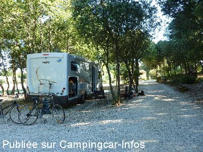
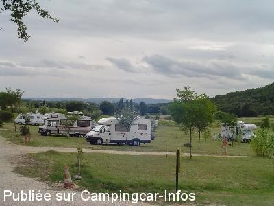
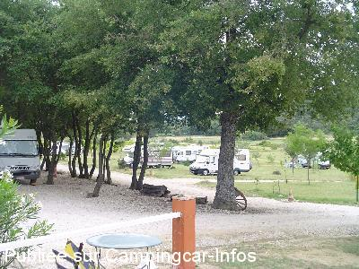
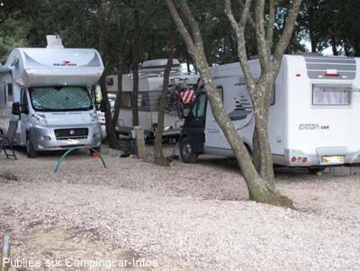
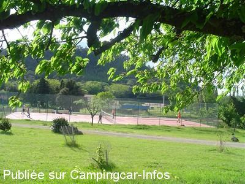
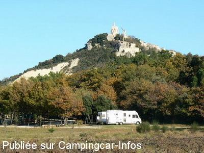

ACS = Aire de services sur camping acceptant le passage pour les services de :
CLANSAYES
(N° 644)
Accès/adresse :
Toronne, D571
26130 CLANSAYES
26130 CLANSAYES
Latitude : (Nord) 44.36936° Décimaux ou 44° 22′ 9′′
Longitude : (Est) 4.79678° Décimaux ou 4° 47′ 48′′
Tarif : 2015
C-C, 2 personnes : 10 à 13 €
Personne + 7 ans : 4 à 5 €
Enfant 2 à 7 ans : 3 à 3,50 €
Électricité 5 A : 4 €
Animal : 1,50 €
Wifi gratuit
Services C-C de passage : 5 €
Type de borne : Artisanale
Services :


Jeux pour enfants
Piscine
Tennis
Buvette
Autres informations :
Ouvert toute l'année
7 emplacements ombragés
Tel : +33 (0) 689 510 777
aire.de.toronne@gmail.com
http://www.aire-de-toronne.com
Région touristique, au pied du petit village médiéval, dans la Drôme Provençale.
Balades pédestres

Le 14/08/2013 par Isabelle

Le 17/07/2013 par Gisèle

Le 17/07/2013 par Gisèle

Le 03/08/2010 par Pau Salmon

Le 12/03/2010 par Gisèle

Le 27/11/2008 par JPS.68
de
germaine et marc
le 28/01/2016 :
Bonjour à tout le monde de l'aire de Toronne
Coucou c'est nous, aire toujours aussi belle, même l'hiver, acceuil n'a pas changer. nous sommes venu pour la 1er fois en 2001 beaucoup de changement,mais en bien, portail qui se ferme à 19 h,(securité) tennis, âne,etc... nous reviendrons, comme on te la dit Gisèle à notre départ;
Continu sans rien changer tout va bien.
A bientôt de se revoir
Bonjour à tout le monde de l'aire de Toronne
Coucou c'est nous, aire toujours aussi belle, même l'hiver, acceuil n'a pas changer. nous sommes venu pour la 1er fois en 2001 beaucoup de changement,mais en bien, portail qui se ferme à 19 h,(securité) tennis, âne,etc... nous reviendrons, comme on te la dit Gisèle à notre départ;
Continu sans rien changer tout va bien.
A bientôt de se revoir
de
marguerite
le 30/06/2015 :
Bonjour,
nous sommes encore revenu à l'aire de Toronne, toujours aussi bien entretenu et tranquille, à l'ombre des gros arbres et à coté de la piscine pour se reposer plusieurs jours. super
Gisèle est toujours accueillante et souriante pour nous rendre service et nous conseiller sur les visites à faire, balader à pied ou en vélo.(y a de quoi faire)
nous nous lassons pas de leur rendre visite à chaque passage dans la région.
Ne changer pas de mentalité et faire rien d'autre tout est super.( mais attention il y a un portail qui se ferme à ...h pour notre sécurité)
A bientôt
Bonjour,
nous sommes encore revenu à l'aire de Toronne, toujours aussi bien entretenu et tranquille, à l'ombre des gros arbres et à coté de la piscine pour se reposer plusieurs jours. super
Gisèle est toujours accueillante et souriante pour nous rendre service et nous conseiller sur les visites à faire, balader à pied ou en vélo.(y a de quoi faire)
nous nous lassons pas de leur rendre visite à chaque passage dans la région.
Ne changer pas de mentalité et faire rien d'autre tout est super.( mais attention il y a un portail qui se ferme à ...h pour notre sécurité)
A bientôt
de
Pillou
le 05/12/2014 :
Super, l'Aire de toronne est ouverte toute l'année, même en hiver. Nous l'allons trouver en bas du village de clansaye, l'aire et les propriétaires sont supers, mais il faut arriver de bonne heure, car il y a un portail qui ferme l'aire à 19h en hiver, (l'été vers 21h) très bien pour la sécurité, nous sommes au calme et tranquille. Nous avons commencer par 1 nuit et vu les lieux sont sommes rester 5, donc super on reviendra.
Super, l'Aire de toronne est ouverte toute l'année, même en hiver. Nous l'allons trouver en bas du village de clansaye, l'aire et les propriétaires sont supers, mais il faut arriver de bonne heure, car il y a un portail qui ferme l'aire à 19h en hiver, (l'été vers 21h) très bien pour la sécurité, nous sommes au calme et tranquille. Nous avons commencer par 1 nuit et vu les lieux sont sommes rester 5, donc super on reviendra.
de
Paul
le 30/10/2014 :
Nous sommes revenus sur l'aire de toronne au printemps et cette été, toujours bien acceuilli les prestations toujours bonnes Nous avons jamais eu ce probleme à l'aire de toronne.un peu de vent mais surportable.Et dans l'herbe s'il vient de pleuvoir Gisèle nous déconseille de ce mettre a cet endroit, je ne comprend
Pour les propriétaires, surtout ne changer rien.
A bientôt de se revoir.
Nous sommes revenus sur l'aire de toronne au printemps et cette été, toujours bien acceuilli les prestations toujours bonnes Nous avons jamais eu ce probleme à l'aire de toronne.un peu de vent mais surportable.Et dans l'herbe s'il vient de pleuvoir Gisèle nous déconseille de ce mettre a cet endroit, je ne comprend
Pour les propriétaires, surtout ne changer rien.
A bientôt de se revoir.
de
Isabelle
le 14/08/2013 :
Nous sommes arrivés a la tombée de la nuit, un peu par hasard et nous sommes restés 4 nuits ...L'accueil de la propriétaire est vraiment très chaleureux, les emplacements spacieux, nous avions pris l'option Électricité sous les arbres, nous avons pu laisser nos chiens en toute sérénité et partir découvrir les environs en vélo. Visite de Grignan, St Paul trois châteaux, Clansayes, La Garde Ademar. Et en rentrant profiter de la piscine.... C'est certain nous reviendrons !
Nous sommes arrivés a la tombée de la nuit, un peu par hasard et nous sommes restés 4 nuits ...L'accueil de la propriétaire est vraiment très chaleureux, les emplacements spacieux, nous avions pris l'option Électricité sous les arbres, nous avons pu laisser nos chiens en toute sérénité et partir découvrir les environs en vélo. Visite de Grignan, St Paul trois châteaux, Clansayes, La Garde Ademar. Et en rentrant profiter de la piscine.... C'est certain nous reviendrons !
de
Marguerite
le 17/07/2013 :
Venu sur l'Aire de Toronne en 2010,revenu en juillet 2013, l'acceuil est toujours aussi sympa, et les emplacements toujours aussi spacieux.(contrairement à ce qui est dit dans le commentaire précédent.) Malheureusement, beaucoup d'entre nous ne font pas la différence entre paking publique et aire privée. Le tarif demandé à Toronne me parait très justifié compte tenu des prestations fournies (piscine, tennis, douche, wc, pain fais le matin et emplacement à l'ombre.....)Personne n'est obligé de revenir à un endroit qui ne lui convient pas. Apportez des critiques constructives plus tôt que de démolir les personnes qui se démènent pour nous offrir des lieux conviviaux et "sécurisés"....Nous reviendrons..
Venu sur l'Aire de Toronne en 2010,revenu en juillet 2013, l'acceuil est toujours aussi sympa, et les emplacements toujours aussi spacieux.(contrairement à ce qui est dit dans le commentaire précédent.) Malheureusement, beaucoup d'entre nous ne font pas la différence entre paking publique et aire privée. Le tarif demandé à Toronne me parait très justifié compte tenu des prestations fournies (piscine, tennis, douche, wc, pain fais le matin et emplacement à l'ombre.....)Personne n'est obligé de revenir à un endroit qui ne lui convient pas. Apportez des critiques constructives plus tôt que de démolir les personnes qui se démènent pour nous offrir des lieux conviviaux et "sécurisés"....Nous reviendrons..
de
Frédéric&Virginie
le 03/01/2012 :
Bonjour,
Nous nous sommes arrêtés le 27 décembre au soir dans ce camping pour notre première nuit de camping car.L'accueil y est chaleureux, le paysage magnifique et on a même eu droit à la gelé du matin.
A refaire lors d'une prochaine étape vers les beaux jours.
Bonjour,
Nous nous sommes arrêtés le 27 décembre au soir dans ce camping pour notre première nuit de camping car.L'accueil y est chaleureux, le paysage magnifique et on a même eu droit à la gelé du matin.
A refaire lors d'une prochaine étape vers les beaux jours.
de
Pit
le 01/02/2010 :
Accueil sympa, eau et vidanges possibles grâce aux propriétaires (sur la grille beaucoup de glace à enlever à coups de marteau !). Aire très calme en cette saison, joli site et alentours. Bien connu des étrangers (un CC allemand et un finlandais). Payé 10€ + 3,50€ pour le 220v.
Accueil sympa, eau et vidanges possibles grâce aux propriétaires (sur la grille beaucoup de glace à enlever à coups de marteau !). Aire très calme en cette saison, joli site et alentours. Bien connu des étrangers (un CC allemand et un finlandais). Payé 10€ + 3,50€ pour le 220v.
de
Familie PIERET
le 01/09/2009 :
Mooi verzorgde plaatsen, mooie omgeving, proper sanitair + zwembad. Vriendelijke ontvangst van de uitbaters. Mooie bar die dagelijks open is.
Echt een aanrader voor een paar dagen, als je in de Ardeche vertoeft moet je zeker eens langs gaan.
Merci pour les frites.
Mooi verzorgde plaatsen, mooie omgeving, proper sanitair + zwembad. Vriendelijke ontvangst van de uitbaters. Mooie bar die dagelijks open is.
Echt een aanrader voor een paar dagen, als je in de Ardeche vertoeft moet je zeker eens langs gaan.
Merci pour les frites.
de
Nade et Pat du 62
le 25/08/2008 :
Aire de camping-cars exceptionnelle. Piscine, tennis, animaux, quad, balades... Bel emplacement à l'ombre ou au soleil, très calme, très familial. Les patrons sont à notre écoute. Gisèle nous prépare de bonnes pizzas ou petits menus sympas, qui dépannent quand on a la flême. Le pain est à la porte de notre camping-car tous les matins... Serge crée suivant son inspiration des petits kyrs dont il a le secret. Pour adultes et enfants... Cette étape devient très rapidement une escale de plusieurs jours. A RECOMMANDER !
Aire de camping-cars exceptionnelle. Piscine, tennis, animaux, quad, balades... Bel emplacement à l'ombre ou au soleil, très calme, très familial. Les patrons sont à notre écoute. Gisèle nous prépare de bonnes pizzas ou petits menus sympas, qui dépannent quand on a la flême. Le pain est à la porte de notre camping-car tous les matins... Serge crée suivant son inspiration des petits kyrs dont il a le secret. Pour adultes et enfants... Cette étape devient très rapidement une escale de plusieurs jours. A RECOMMANDER !
de
Christian
le 09/07/2007 :
Amateurs de bitumes bien plats et d'aire impersonnelle passez vôtre chemin. Propriétaires, sympathiques ... Difficile de trouver mieux. Nous ne devions que passer, nous sommes restés 3 jours.
Amateurs de bitumes bien plats et d'aire impersonnelle passez vôtre chemin. Propriétaires, sympathiques ... Difficile de trouver mieux. Nous ne devions que passer, nous sommes restés 3 jours.
de
famille toullier dominique
le 08/08/2006 :
Lorsque vous arrivez à Toronne vous entrez sur une aire de services, quand vous en repartez (avec regret)vous quittez des amis. Mille mercis à la famille Bigot qui fait plus que de l'accueil. Aide au débutant que je suis, aide au stationnement, prêt d'une rallonge, pain et pizza chaude sur la table, les petits mots sympas des hotes et le tout, englobé dans le prix du stationnement. Sans parler de la piscine et du tennis, toilettes et douches chaudes à volonté. Bravo. C'est digne d'un camping 4 étoiles au prix du 2 étoiles.
Lorsque vous arrivez à Toronne vous entrez sur une aire de services, quand vous en repartez (avec regret)vous quittez des amis. Mille mercis à la famille Bigot qui fait plus que de l'accueil. Aide au débutant que je suis, aide au stationnement, prêt d'une rallonge, pain et pizza chaude sur la table, les petits mots sympas des hotes et le tout, englobé dans le prix du stationnement. Sans parler de la piscine et du tennis, toilettes et douches chaudes à volonté. Bravo. C'est digne d'un camping 4 étoiles au prix du 2 étoiles.